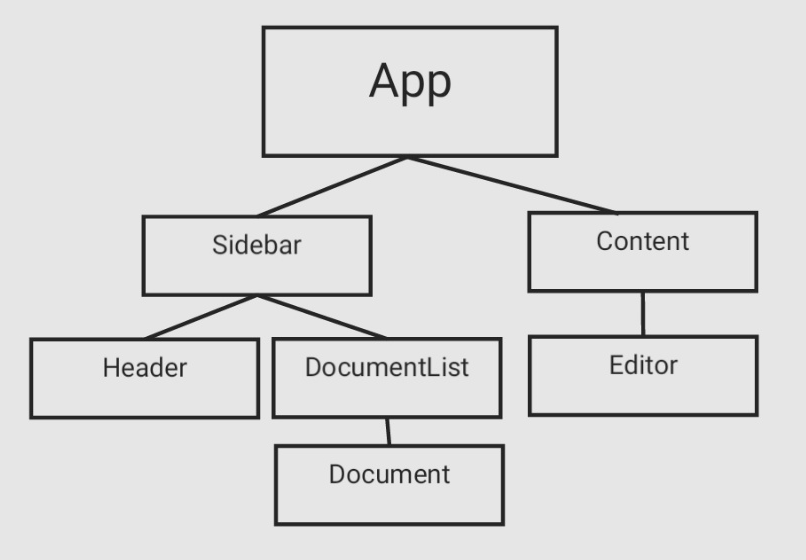

⏳기간: 2021/11/08 ~ 2021/11/12
🏔목표
- 정해진 기간에만 리팩토링 하기
- 컴포넌트의 책임에 대해 고민해보기
- document 생성을 하면 sidebar와 editor가 새롭게 생성 되어야 한다.
- document 삭제기능
- 새로고침시 정보를 받아올수 없다는 창 나오지 않게 하기
- 토글버튼
- editor 수정시 디바운스 되며, 로딩중이라고 사용자에게 보여주기
- 사용성 개선(포인터, hover효과)
프로젝트 구조

App컴포넌트
기존 프로젝트의 문제는 url이 '/' 아닌 곳에서 새로 고침을 하게 되면 현재 페이지가 아닌 잘못된 페이지를 보여주는 문제점이 있었다. 사실 이것을 문제라고 인지하기까지 꽤 오랜 시간이 걸렸다.
지금에서야 한 줄로 설명할 수 있었지만 그 당시에는 허둥지둥 대면서 뭐지? 맨 처음 페이지에서는 정상 실행되고 다른 페이지에서는 안되지 이러면서 계속 프로젝트를 빌드 해보고 종료해 보는 작업을 많이 하며 문제를 이해하게 되었다.
문제를 해결하기 위해 route관련된 강의와 JS로 SPA방식을 구현한 코드도 보며 이해하면서 공부를 했다.
그 결과 문제를 해결했지만 프로젝트 특성상 처음 렌더링이 된다면 따로 렌딩페이지를 보여주는 것이 아니라 DocumentList에서 처음 Document를 선택해 editor에 보여주기 때문에 이를 수용하기 위한 코드가 필요했다.
아래코드는 App이 렌딩시 현재 url 확인 후 현재 Document내용을 전달해주는 함수를 만들어 해결했다.
1
2
3
4
5
6
7
8
9
10
11
12
13
14
15
16
17
18
19
20
21
22
23
24
25
26
27
28
29
30
31
32
33
34
35
export default function App({ $target }) {
//...
this.route = async () => {
const { pathname } = window.location;
try {
//아무것도 없을 때
if (pathname === "/") {
const nextState = await getDocument();
//Document가 없다면 새로운 document를 만들어줘야됨
if (nextState.length === 0) {
const post = await createDocument(null);
const { id } = post;
push(`posts/${id}`);
editPage.setState(post);
return;
}
push(`posts/${nextState[0].id}`);
editPage.setState(nextState);
} else if (pathname.indexOf("/posts/") === 0) {
//이미 선택된 페이지가 있다면 그곳으로 이동
const [, , postId] = pathname.split("/");
const nextState = await getDocument(postId);
editPage.setState(nextState);
}
} catch (e) {
console.log(e);
}
};
initRouter(() => this.route());
}
Sidebar컴포넌트
기존 Sidebar컴포넌트는 Header와 DocumentList를 포함하는 컴포넌트였지만 DocumentList에 많은 이벤트가 있다 생각하여 Sidebar에 이벤트를 다루게 해주었다.
이러한 작업을 하려고 하니 Sidebar에 상태가 필요했다고 느꼈다.
그래서 처음 렌더링되면서 API결과를 불러오는 로직을 통해 DocumentList로 상태를 전달했으며, DocumentList에서 필요한 로직이 있다면 그것은 Sidebar에서 실행시키도록 했다.
이렇게 작성을 하니 DocumentList의 코드 길이도 짧아지고 가독성이 높아지는 경험을 했다.
1
2
3
4
5
6
7
8
9
10
11
12
13
14
15
16
17
18
19
20
21
22
23
24
25
26
27
28
29
30
31
32
33
34
35
36
37
38
39
40
41
42
43
44
45
46
47
48
export default function DocumentList({ $target, onAdd, onDelete, onChange }) {
//...
$listContainer.addEventListener("click", (e) => {
if (e.target.className === "document-container") return;
const $document = e.target.closest("ul");
const $addButton = $document.querySelector(".add-btn");
const $deleteButton = $document.querySelector(".delete-btn");
const $toggleButton = $document.querySelector(".toggle-btn");
const { id } = $document.dataset;
switch (e.target) {
case $addButton: {
onAdd(id);
break;
}
case $deleteButton: {
onDelete(id);
break;
}
case $toggleButton: {
if ($document.className === "list-off") {
$document.className = "list-on";
$toggleButton.innerHTML = "▾";
} else {
$document.className = "list-off";
$toggleButton.innerHTML = "▸";
}
break;
}
default: {
onChange(id);
}
}
});
this.state = null;
this.setState = (nextState) => {
//...
};
this.render = () => {
//...
};
this.render();
}
다만 토글 버튼은 document를 직접 관리하는 작업이므로 DocumentList에서는 다루기가 힘들어 로직을 그대로 넣었다.
Content | Editor컴포넌트
Sidebar와 DocumentList의 구조와 1대1 매칭되는 부분이다. 여기서 추가된 부분은 Editor의 title부분을 수정하면 documentList의 일부분이 수정되어야지만 안됐던 부분을 현재 작성하고 있는 위치에서 ID값을 얻어 해당 value를 수정하는 방식을 사용했다.
문제는 해결했지만 이 부분에서 많은 고민을 했다. documentList와 Editor는 의존성이 없는 컴포넌트인데 이걸 의존성있게 하려면 App에서 모든 데이터를 제어하거나, 특정 트릭을 이용해 구현해야 된다고 생각했다.
그래서 내가 한 선택은 ID값을 이용해 낙관적 업데이트를 하는 트릭을 생각했다. 이는 의존성을 갖지 않게 하여 내가 원하는 의도이기 때문이었다.
🧭되돌아보기
리팩토링의 방향을 정하지 않고 무지성으로 코드부터 건드려서 초기 프로젝트와는 많은 변동 사항이 있었다. 이 생각이 떠오른 이유는 내가 회고를 하면서 변경한 코드의 이유가 명확하지 않았기 때문이었다.
내가 생각하는 개발자는 코드 한 줄 한 줄에 논리가 있어야 된다고 생각한다.
정작 회고를 하면서 나는 나의 코드에 대해 명확한 이유가 없었구나 느꼈다.
회고를 하면서 리팩토링한 코드를 다시 읽어보며 3~4일전의 나는 왜 이렇게 짰지 많은 의문을 던지면서 이유를 찾아 회고를 했다.
이런 상황이 발생한 문제는 무엇인가 생각해 보니 내가 아직 익숙하지 않다고 생각했다. 프로젝트의 구조부터 컴포넌트를 어디까지 분리해야 되는지, 이벤트의 위임 등 많은 문제들이 나에게 와닿았다.
👍Keep
- 기간을 두고 리팩토링을 완주한 경험
- 다시 코드를 고쳐보려는 노력
- 모르는 것을 왜 모르는지 스스로에게 물어봄
🚨Problem
- 리팩토링을 어떻게 해야될지 방향을 정하지 않음
- 컴포넌트부부만 신경써서 리팩토링 한 것
- 작업을 세분화하지 못해 commit의 내용과 다른 코드내용들이 섞인 부분
🚵♂️Try
- 리팩토링시 충분한 QA를 통해 무엇을 얼마나 언제동안 할것인지 계획해보기
- commit단위로 작업하기 위해 작업하다 고쳐야될 부분이 생각나면 다른 한쪽에 적고 현재 작업과 최대한 분리시키며 작업하기